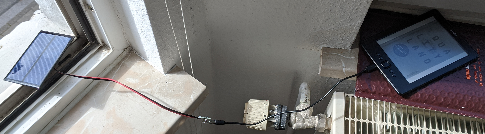

I carry a cell phone while hiking and not just for emergencies: having a GPS device that can have your maps, plan routes, and, most importantly, show you almost exactly where you are is a sensible thing to carry (not to say that one shouldn't also carry a real map and compass). Dedicated GPS devices have lower power draw and bigger batteries (e.g. Garmin devices) but aren't cheap - they cost as much as an inexpensive smart phone. The way to get around concerns about having enough power is to have a decent backup battery and a solar charger. Solar chargers are commercially available, but it's must more fun, even if only marginally cheaper, to build my own (and learn something in the process).
I picked up some cheap 5V solar panels for testing: The first go, now identified as v0.1, simply connected the output of the panel to a USB socket. The panel produced a maximum of 5V in bright, direct light and USB devices have their own battery management system (BMS) on board, so the first thought was just to run the panel in directly. Typical lithium-polymer cells found in consumer electronics have nominal voltages of 3.7V (4.2V fully-charged), so I was hoping a trickle charge from a solar panel could serve to keep a cell at at least partial charge. This didn't seem to produce any observable increase in the state-of-charge over a day, however, so I decided to try again.

The next iteration connects the two 5V panels in series. The peak voltage of 10V is too much for the USB input, so a L7805 voltage regulator is used to control the output from the solar cells. The voltage in and out lines are connected to the common ground with capacitors - I didn't have exactly the right values handy, so I sized up slightly for now. This works significantly better.
I know it looks like a lot of tape, but there's a logic to it. With the black electrical tape, two pieces hinge the panels together, four small pieces strain-relieve the wires ahead of each contact, and four smaller pieces cover the soldered contacts. The voltage regulator is glued down as is a hook and loop cable tie for attaching the panels to a lashing square on the backpack. The white duct tap then is used to solidly overlay and bind everything. It does all make sense, but next time I will use a prototyping board (but for now I just wanted to throw everything together and test it.) Obviously the plan is to build a bigger, better, more reliable version next. With a single panel, all the electronics can be placed right at the contacts and the whole assembly potted for protection from mechanical and water damage. Then I can just have a long lead to a USB A socket or micro B plug.
When really getting away from it all, cell towers might simply not be close enough to make any calls. You could go without (daring), get a satellite phone (expensive), on settle on something more exotic - I am really looking forward to the 4G rotary phone kit. This phone uses an SMA connector for the antenna, so there is an option to replace an omnidirectorional antenna with a directional one. With the right frequency for the cellular signal (I may need to ask someone) it's possible to design and construct a cellular directional antenna in the same style as these wireless circular waveguide directional antennae. Here's some background on waveguides and the relevant equations plus another calculator. In the mean time, I've hacked together a 2.4 GHz antenna for use with WLAN. After a lot of frustration trying to solder the connection between the copper wire serving as the antenna inside the waveguide and the mount, I finally just filed a taper on the end and tapped it in with a hammer. I should just always start with a mechanical solution... More coming on the cellular version...